Vision at the gate, on the edge
A plate detector triggers every camera, then plate reading, head counting and cross-camera matching run on one edge computer, offline.
200 to 350 ms end to end · accuracy 0.55 → 0.79
Machine learning engineer in Dar es Salaam. Forecasting, computer vision and Kiswahili language models, and the backends, apps and boards that keep them running.
Drag the ship past the microphone
From my first Flutter app to models that run every day. Each year added a kind of problem and the software to carry it.
Flutter apps as a mobile intern, and a timetable system for my university.
Flutter, Dart
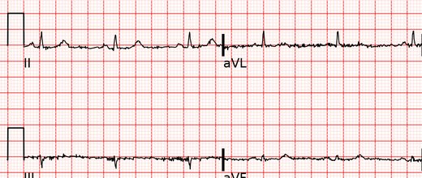
Heart signals (ECG), sign language and faces, served behind small APIs.
model APIs, a Telegram bot
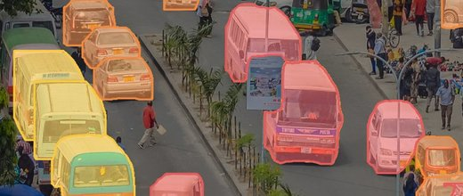
Won a multilingual search hackathon, tracked cars with YOLO, first language-model work.
Django and TypeScript web apps
Graduated top engineer. Retrieval chatbots live for a lender, then a chatbot platform.
FastAPI, Docker, vector databases
Fine-tuned models served on vLLM, cervical cancer screening, claims fraud and risk.
WhatsApp and SMS services, job queues
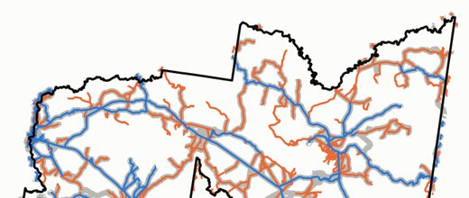
Agent platform, fingerprint checks, gate vision, research in water and handwriting.
Go and Rust backends, offline sync, mobile
Most of the data I work with is scarce, messy, or doesn't look like the test. So I spend more time on how a model is checked than on squeezing the score.
Predicting whether a recorded death was climate-sensitive. Train and test came from different villages, so I validated by whole village. Switch the split and see which records leak.
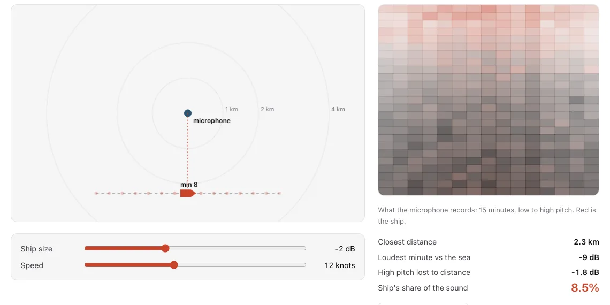
How much of an underwater recording is a passing ship? I built practice data, a splitter and a tree model, and found where the points go.
0.811 · loud ships cost 65% of lost points
Code on GitHub →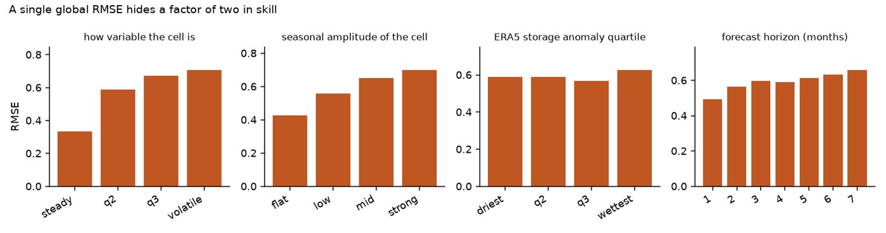
Satellite water storage, one month ahead, on a global grid. Per-cell models on four climate sources, and a leak I caught in my own pipeline.
32% lower squared error than carrying forward
Code on GitHub →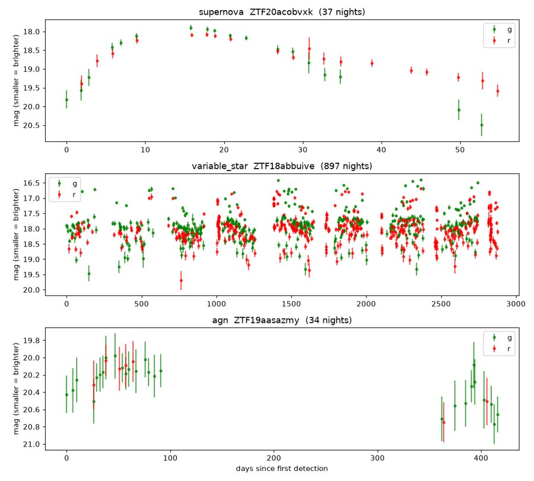
Sorting sky alerts into supernova, variable star or active galaxy from brightness over time, early enough to point a telescope.
97% right from the first 10 days
Code on GitHub →I started with a YOLO traffic tracker in 2023. Today my vision models run on small computers at real gates, where the internet drops and the light changes all day.
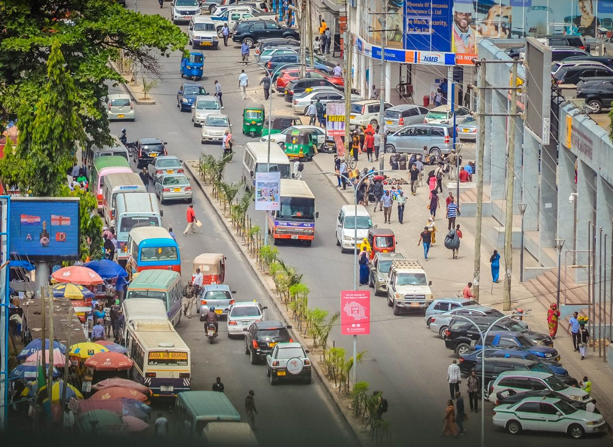
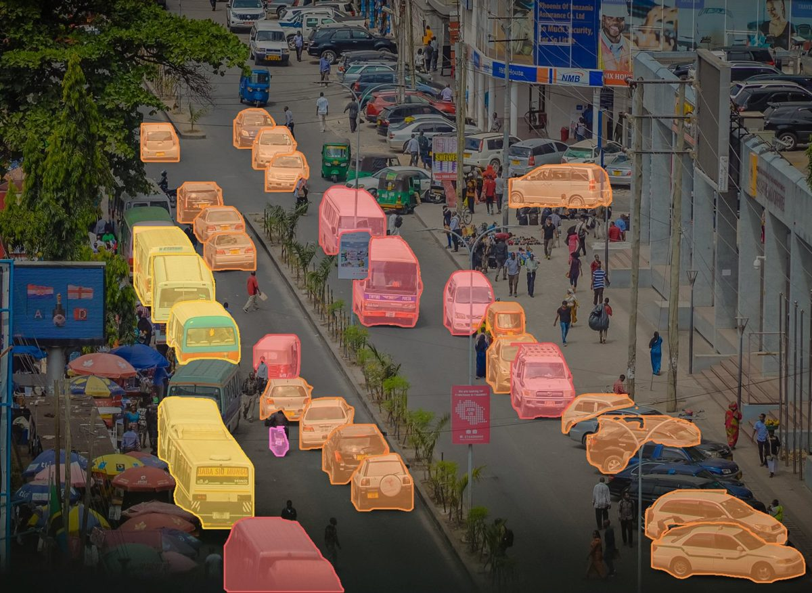
YOLO11 outlines 30 vehicles. It also shows the gap: there is no class for bajajis, which is why I fine-tune on local footage. Photo: Erasmus Kamugisha, CC BY-SA 4.0.

A plate detector triggers every camera, then plate reading, head counting and cross-camera matching run on one edge computer, offline.
200 to 350 ms end to end · accuracy 0.55 → 0.79
The AI checks whether each clinic photo is good enough before judging it, so a blurry shot is retaken, not misread, then marks possible lesions for the nurse.
An aid: an expert reads every case
No scanner. Matching on both ridge texture and ridge-point geometry, over six months of experiments.
Wrong-person matches 10.7% → 3.3%
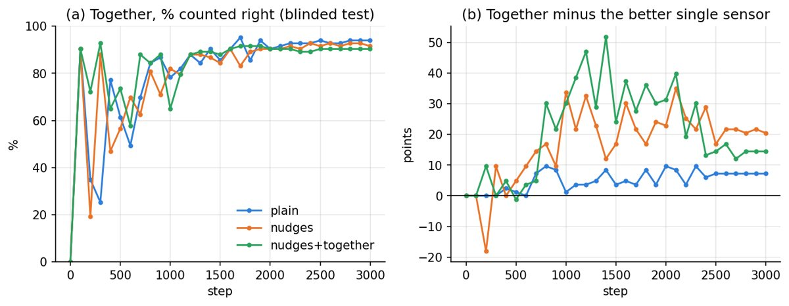
Counting people with a camera and a radar. Training randomly blinds one sensor so the other learns to cover.
+7 to 21 points with the camera blinded
Most ECGs in Tanzania exist only on paper. I'm working on turning a photo of a printout back into the signal.
Research
I fine-tune and serve open models myself, on rented GPUs, and I care about Kiswahili working as well as English.
Meaning search and word search take turns, with Kiswahili money words mapped so either language finds the page. A toy version over six sample pages, running in your browser.
Property deeds from the 1700s and 1800s. A LoRA fine-tune of a 7B vision-language model, then a word-by-word vote across three.
Character error 49% → 5.25%
SFT with LoRA, then GRPO with a reward on the answers, on Qwen2.5 from 1.5B to 14B. Served with vLLM since 2025.
Many answers at once from one GPU
An assistant on web, WhatsApp and SMS. One tool-calling agent, each business area its own MCP server.
About 24 tools, under a budget of 40
Before any model, the data has to be right. These are pipelines and audits where getting the data right was the whole job.
Real satellite water storage for East Africa. The orange dot is next month's forecast: last month plus the usual change for that time of year, learned only from the past. A simplified version of my model.
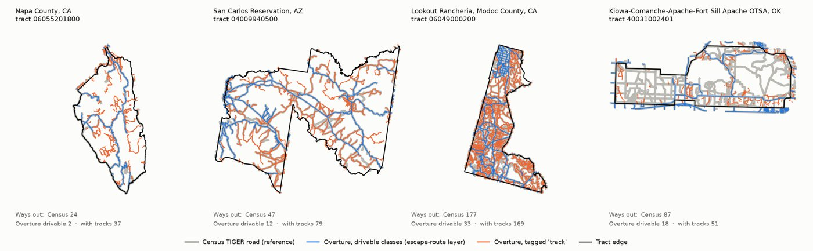
I rebuilt a hidden scoring pipeline for 9,379 US census tracts from 5 GB of map data, then measured what it misses.
Matched to 0.000000045 · rural exits hidden 4x more
Code on GitHub →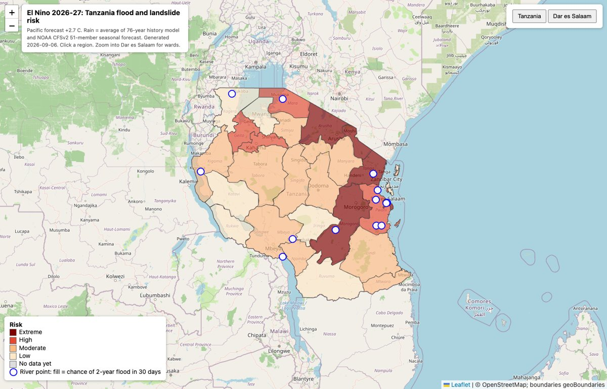
76 years of rainfall history and a 51-member seasonal forecast, scored per region and per Dar es Salaam ward.
Every region and ward scored
ERA5-Land, GLDAS, FLDAS and IMERG come in different grids, units and calendars. One monthly land grid, one table.
One aligned table
The site sends no change headers, so I fingerprint the parsed items. If nothing changed, nothing is written.
Follows robots rules
A model only matters if the system around it holds up. I build those systems too, mostly in Go, Rust and Python.
Many Go servers share live chat through Postgres, no Redis. A dropped phone gets up to 500 missed messages back.
1,107 people online · 95% of reads in 12 ms
Live audio to speech-to-text. When the service is full, the server keeps the audio and catches up later.
Uploads resume from the last byte
A media server rewritten in Rust, then every recorded response replayed against both.
2,295 / 2,295 identical · 7 MB on a phone
Records saved on the phone first; push what's unsent, pull everything after the last number seen.
Works with no internet
I design the boards and cases too. These are builds in progress; photos of the finished devices are coming.
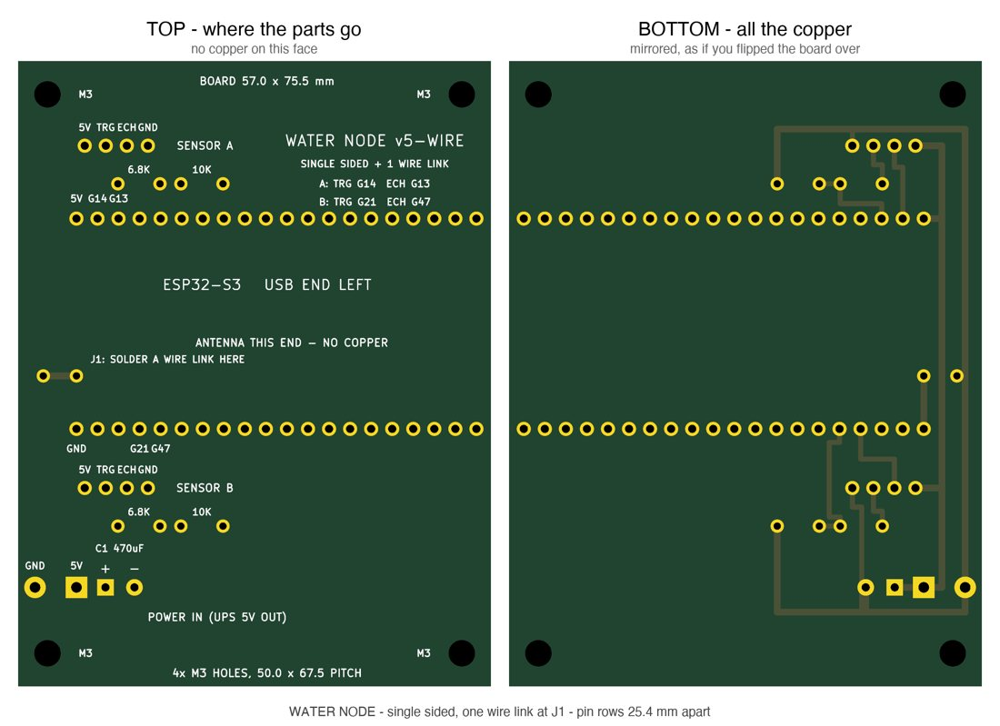
An ultrasonic sensor over each rooftop tank, an ESP32-S3, a KiCad board ready for the print shop, and a 3D-printed collar and case. A web page shows litres left.
Board ready to print
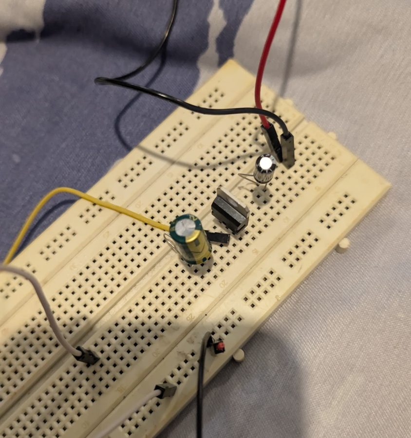
ESP32 and ESP32-CAM, a TB6612FNG motor driver, 18650 batteries and a 5 V regulator. Drive it and watch the live feed from a phone.
Breadboard prototype
An ESP32-CAM stream through a small Go proxy to an Android and Chromecast app, reachable anywhere over a private network.
Streaming end to end
Turning a walk-through video into a 3D model with COLMAP, MASt3R and Gaussian splatting.
Research
Product sites and apps, built end to end.
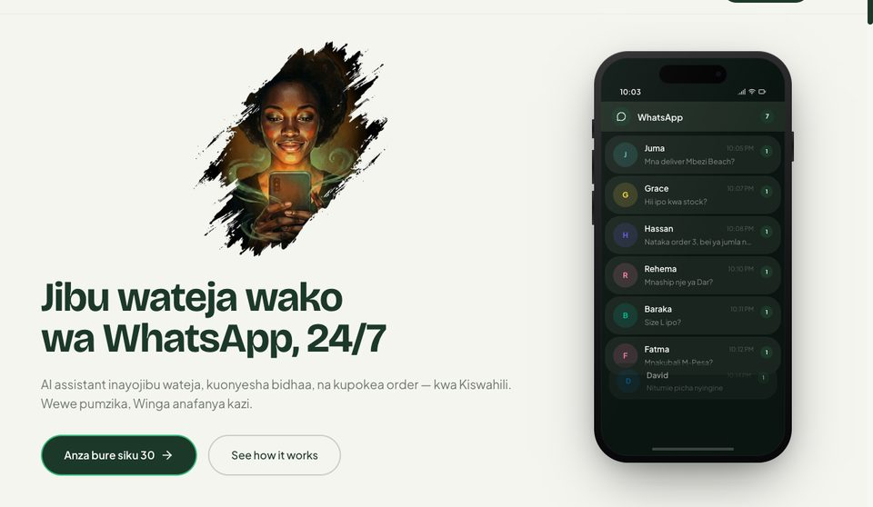
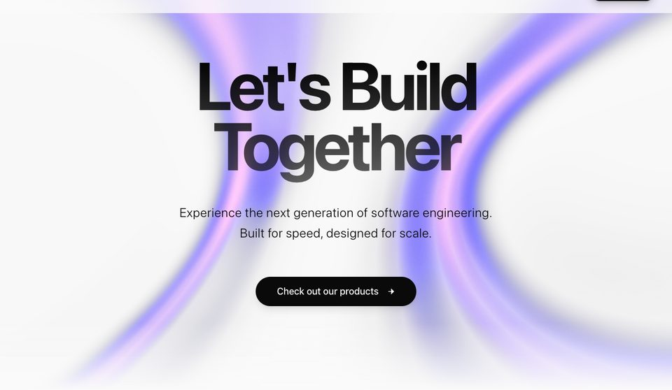
Best Graduating Engineer, BSc Computer Engineering and IT, University of Dar es Salaam. Engineers Registration Board of Tanzania.
Category winner, Lablab.ai multilingual semantic search hackathon (Cohere and Qdrant).
Top 2% of participants on Zindi Africa machine learning competitions.
Second place, Power Hacks Tanzania, waste image classification.
AI assistants in Kiswahili and English, risk and fraud models, computer vision on the edge, and the products around them. The usual start is a two-week pilot on your real data.